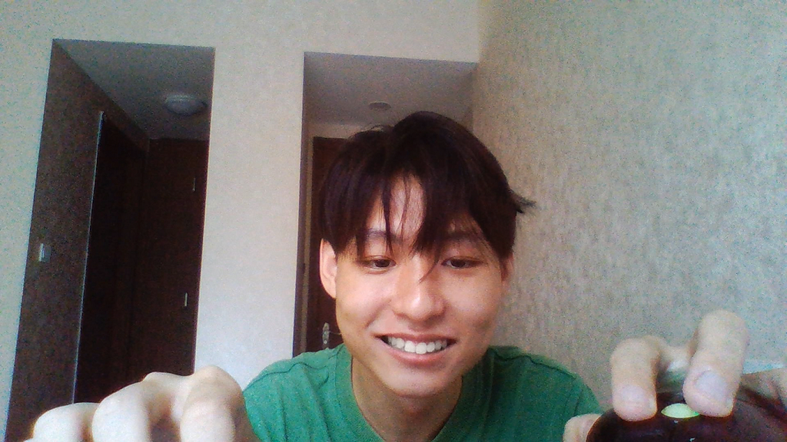

Figure 1. Lvmin's reading a Twitter meme after waking up at 7:30 am. © Attribution-ShareAlike 4.0 International (CC BY-SA 4.0).
As shown in Fig. 1, Lvmin Zhang (Lyumin Zhang) is a Ph.D. student in Computer Science advised by Prof. Maneesh Agrawala at Stanford University since 2022. Before that, he was a Research Assistant in the lab of Prof. Tien-Tsin Wong at the Chinese University of Hong Kong since 2021. He has also collaborated with Prof. Edgar Simo-Serra on many interesting projects. He received his bachelor's degree of B.Eng. from Soochow University in 2021, supervised by Prof. Yi Ji and Prof. Chunping Liu. Lvmin's research fields include computational art and design, interactive content creation, computer graphics, image and video processing, and ANIME! He loves these and organized a special interest research group called Style2Paints Research. He also developed an anime drawing software called Style2Paints. You might be interested in:- Lvmin's researches and publications in his research page.
- Lvmin's projects in his GitHub profile.
- Lvmin's email addresses: lvmin AT cs.stanford.edu / lvminzhang AT acm.org / lvminzhang AT siggraph.org.